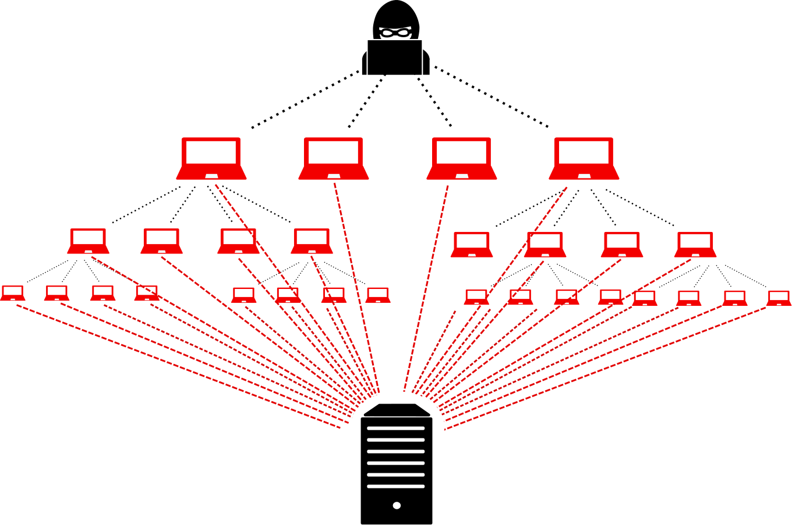
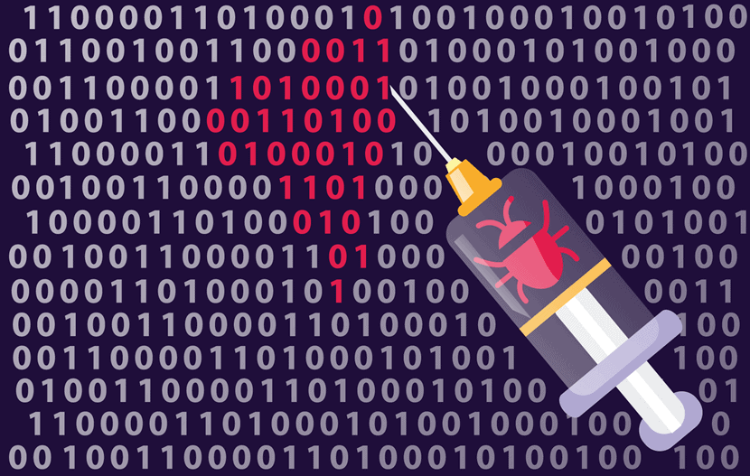

Cyber Attacks
There are numerous cyberattacks nowadays and their types varies greatly. New types of attacks continues to emerge as our new technologies develops. Therefore, instead of providing a full picture of all types of cyberattacks, this site will only introduce 3 most common types of attacks.

Man-in-the-middle attack
A very common cyberattack is called the “Man-in-the-middle” attack, where the attacker maliciously pretend as the server to the client and as the client to the server. In this way, all data passed between the two hosts will be intercepted by the attacker, who can thus benefit from the private information of the victim such as credit card number and social account password.

What’s worse is that the victim is unconscious of what happened. Due to the double identity of the attacker, neither the client nor the server are able to see through the attacker’s disguise. Often times, the attacker can escape from this kind of cyber crime.
DDoS (Distributed denial of Service) attack
Such attack is where the attacker sends overwhelming trash message to the victim through a large zombie network and thereby paralyzes the victim. The effectiveness of this attack depends on the capacity of the zombie network that the attacker control, which is highly expensive and time-consuming to build. However, if he capacity is large enough, the damage that it costs is also quite appalling. It can immediately “destroy” sites that are overwhelmed, shutting down their service systems.
Nevertheless, common personal users are unlikely to be attacked by DDoS since it often targets at massive online service platforms, usually products by dot-com companies.
General Vulnerabilities
This attack utilizes the unsafe measures to get controls over the victim’s system without authorization. The word “vulnerability” refers to the inability of a system to protect itself in a hostile environment. This type of attack is considered the primary attack in the current cyber world, as vulnerabilities are ubiquitous on the Internet.
The severity of consequences depends on the level of vulnerability being attacked. In the worst case where the attacker acquires the ROOT permission, the whole system will be compromised.